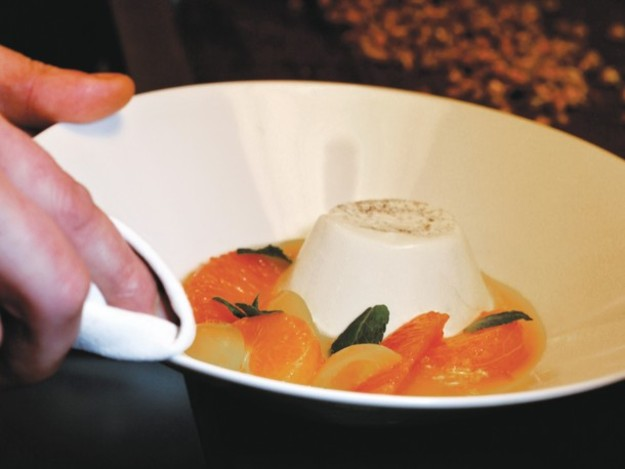

Ingredients:
Pannacotta
- ½ vanilla bean
- 1 ½ cups (350 ml.) heavy cream
- 3 tablespoons granulated sugar
- 1 teaspoon crumbled dried chamomile or chamomile tea
- 1 ½ sheets (6 grams) gelatin
- 3 tablespoons (50 ml.) whole milk
Citrus Soup
- 2 small grapefruits
- 2 oranges
- 8 kumquats
- 2 clementines
- ½ sheet (2 grams) gelatin
- ½ cinnamon stick
- 1 tablespoon honey
- Mint leaves
Method:
- To make the panna cotta: With a small knife, split the vanilla bean and scrape out
the seeds; reserve the pod and seeds. Combine the cream, sugar, chamomile, and vanilla seeds and pod in a small nonreactive saucepan
and bring to a simmer. Remove from the heat and let infuse for 20 to 30 minutes. Strain through a fine-mesh sieve into a medium bowl.
- Meanwhile, put the gelatin in a bowl of cold water and let stand for 10 minutes, or until softened.
Drain the gelatin and squeeze out the excess water. Heat the milk in a small saucepan, just until warm, then add the gelatin and stir to dissolve it.
Pour the milk into the infused cream and stir well. Pour into four 4-ounce timbale molds (about 5 cm high and 5 cm wide) or 4-ounce ramekins.
- Refrigerate for at least 6 hours, or overnight.
- To make the citrus soup: Juice 1 of the grapefruits and both oranges;
reserve a ½ cup of each type of fruit juice.
- Quarter the kumquats lengthwise and remove the seeds. Place them in a saucepan, cover with cold water, and bring to a boil.
Drain in a colander and rinse under cold water.
- With a sharp knife, peel the remaining grapefruit and the clementines, removing the skin and all the bitter white pith.
Then cut between the membranes to remove the citrus segments. Combine with the kumquats in a bowl.
- Put the gelatin sheet in a bowl of cold water and let stand for 10 minutes, or until softened.
- Combine the orange and grapefruit juice, cinnamon, and honey in a small nonreactive saucepan and heat until warm.
Drain the gelatin, squeeze out the excess water, and add to the juice, stirring to dissolve it. Let cool to room temperature.
- Pour the cooled juice over the fruit segments and refrigerate until chilled.
- To serve: To unmold the panna cottas, briefly place each one in hot water, then invert into a shallow bowl.
Pour the citrus soup around (discard the cinnamon stick) and garnish with mint leaves.